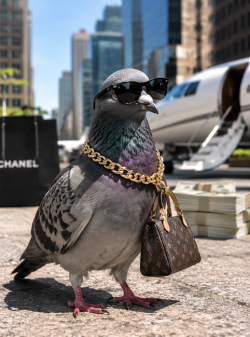
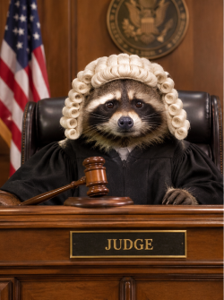

Pigeon Accidentally Becomes Millionaire After Stealing Billionaire's Credit Card
A pigeon in downtown New York has reportedly accumulated $3.7 million in luxary purchases after stealing a billionaire's credit card during an outdoor business meeting. The bird allegedly purchased 14 luxary handbags, a private jet, and an undisclosed amount of birdseed before the card was reported missing.
"We initally suspected fraud,"said one bank representative. "Then we reviewed the security footage and saw the pigeon tap the card on the payment terminal. It even waited for the receipt." The pigeon has since hired two lawyers, acquired a penthouse apartment, and refused to comment unless reporters provide complimentary breadcrumbs.
When asked how it plans to manage its newfound wealth, the bird reportedly responded by pooping on a reporter's mircophone. Financial experts are already calling it the most successful entrepreneur in bird history.

Raccon Arrested for Shoplifting Gets Released After Representing Himself in Court
A raccoon in Ohio has been acquitted of 37 counts of shoplifting after successfully representing himslef in court, marking what legal experts are calling "the most embarassing day in American Judicial history."
The raccoon, identified as Trashley Johnson, was accused of stealing snacks, shiny objects, and an entire rotisserie chicken from a local grocery store. During the trial, prosecutors presented security footage showing the suspect entering the store, grabbing a shopping basket, and walking directly to the deli section.
However Trahley reportedly defended himself by staring at the jury for 45 minutes without blinking. "I've never seen anything like it," said the visibly exhausted judge. "At one point, he pulled a grape out of his pocket and ate it while I was speaking." The jury returned a not-guilty verdict after just six minutes of deliberation. Trashley was last seen leaving the courthous with a stolen briefcase and what witnesses described as " the confidence of a man who knows he will never face consequences."
